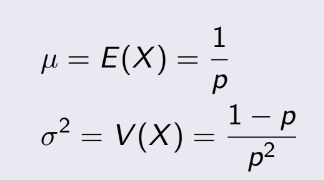

TEST 1: Chapter 1,2,3
Giới thiệu (Chapter 1)
Xác xuất thống kê sử dụng, thu thập, phân tích data để đưa ra kết luận, giải quyết vấn đề...
2 phương pháp thống kê chính:
- descriptive statistics (thống kê mô tả): tóm tắt, trình bày dữ liệu
- inferential statistics (thống kê suy luận): mô tả, suy đoán tính chất một tổng thể dựa trên 1 mẫu
Các keywords
- Data: Bao gồm thông tin đến từ các quan sát, đếm, đo lường hoặc phản hồi.
- Population: Là tổng thể (về lĩnh vực của bài toán).
- Parameter: Phép đo(số), mô tả đặc tính của Population.
- Sample: Sub-collection được lấy từ Population.
- Statistic: Phép đo(số), mô tả đặc tính của Sample.
=> Chúng ta sử dụng Statistic để suy luận Parameter, nên chú ý nhầm lẫn giữa thông số của Population(Parameter) và của Sample(Statistic)
Ví dụ: Muốn tính lương trung bình của những người đã đi làm, ta khảo sát 2000 người. Từ đây ta thấy tất cả những người đã đi làm là Population, 2000 người kia là Sample.
Phân loại dữ liệu
- Qualitative data (định tính): Không thể đếm, như video, document, ... .
- Quantitative data (định lượng): Số thực, như chiều cao cân nặng, khoảng cách, ... .
- Discrete data (dời dạc): đếm được hoặc vô hạn đếm được, như là số người, lượng chó, ... .
- Continuous data (liên tục): có thể là bất kì số nào, như chiều cao, tốc độ, ... (nói chung các phép
đo).
Thu thập dữ liệu
- Retrospective study: sử dụng những dữ liệu từ trước đó, vd: hỏi người bệnh về tiền sử bệnh của họ để
nghiên
cứu .
- Observational study: Nghiên cứu, quan sát một phần của tổng thể, vd: nghiên cứu 500 người mắc bệnh lao
để
đưa ra kết luận gì đó về người mắc bệnh
- Experiment: Thực nghiệm trên một phần của tổng thể, sau đó quan sát kết quá, vd: cho cún ăn bả, rồi
lấy số
liệu sau khi săn để nghiên cứu .
chapter này không khó, nên cố gắng học hiểu hơn là cố học thuộc công thức, chỉ cần hiểu biến rời rạc, biến liên tục, xác suất có điều kiện với hiểu qua định lý bayes là khá ổn
Chapter 2
2.1 Sample spaces and events (Không gian mẫu và biến cố)
Random experiment: là một thực nghiệm để dẫn tới những kết quả khả
thi
Ví dụ:
Ramdom experiment: tung 1 đồng xu
Outcomes (kết quả): xấp hoặc ngửa
Sample space: Không gian mẫu, chứa tất cả những kết quả có khả năng
xảy
ra, kí hiệu là S.
Ví dụ: tung đồng xu 2 lần
S = {xấp xấp, xấp ngửa, ngửa ngửa, ngửa xấp}
Tree diagram (biểu đồ cây)
Không gian mẫu có thể được biểu diễn dạng biểu đồ cây
Ví dụ: tung 1 đồng xu sau đó tung tiếp 1 cái xúc xắc, tất cả trường hợp khả dĩ:
Event (biến cố): tập con của không gian mẫu
Ví dụ: tung 1 đồng xu 3 lần, biến cố là đúng 2 lần ra mặt sấp, tính xác suất
Union (hợp) của A và B: A ∪ B, đúng khi nằm trong A hoặc B hoặc cả
hai
Intersection (giao) của A và B: A ∩ B, đúng khi nằm trong cả hai
Complement (đối) của A: A', ngược lại với A
Counting techniques (Kĩ thuật đếm)
Multiplication Rule (quy tắc nhân):
Nếu quá trình cần k bước, bước 1 có n1 cách, bước 2 có n2 cách, ... thì số cách để đi đến kết thúc:
n1 x n2 x ... x nk
Permutations (hoán vị):
Số lượng hoán vị là chính là chỉnh hợp, số cách chọn r phần tử từ n phần tử và có sắp xếp, ví dụ
như
chọn từ 3 người A, B, C sẽ có các cách là:
ABC, ACB, BAC, BCA, CAB, CBA. Công thức số cách: nPr (casio).
Combination (tổ hợp):
Rất quen thuộc, số cách chọn r phần tử từ n phần tử và không theo thứ tự, ví dụ như chọn 2 người từ
3
người A, B, C là: A và B, B và C, C và A. Công thức số cách: nCr (casio).
2.2 Probability (xác xuất)
Trong một không gian mẫu có n khả năng xảy xa, xác xuất để xảy ra biến cố trong một phép thử là như
nhau
thì xác xuất mỗi cái đều là 1/n. Ví dụ
như tung xúc xắc 1 lần thì khả năng xảy ra mặt 1, 2, 3, 4, 5, 6 là như nhau xác xuất đều là 1/6.
Mutually Exclusive Events (biến cố xung khắc):
Là các biến cố không thể đồng thời xảy ra, A ∩ B = ∅. Ví dụ như tung xúc xắc, không thể đồng thời ra
mặt
1 hoặc 2.
2.3 Addition Rules (quy tắc cộng)
P/S: không nên cố nhớ những công thức này, tự vẽ sơ đồ ven sẽ dễ hiểu hơn rất nhiều, tự vẽ ra đi?
P(A ∪ B) = P(A) + P(B) − P(A ∩ B)
P(A ∪ B ∪ C) = P(A) + P(B) + P(C) − P(A ∩ B) − P(A ∩ C) − P(B ∩ C) + P(A ∩ B ∩ C)
Nếu A và B xung khắc: P(A ∪ B) = P(A) + P(B)
note: P(A') = 1 - P(A)
2.4 Conditional Probability (xác suất có điều kiện)
Xác suất để xảy ra B với điều kiện A, tức là xác suất xảy ra B khi mà A đã thỏa mãn. Kí hiệu P(B|A) :
Ví dụ xác suất 1 người béo phì(A) là 30%, 1 người tiểu đường(B) là 3%, 1 người béo phì hoặc tiểu
đường(A
∪ B) là 31%.
Tính xác xuất người bị tiểu đường khi đã béo phì.
Ta thấy P(A U B) = 31% = 0.31.
=> P(A ∩ B) = 0.02 (công thức bên trên, nhưng vẽ biểu đồ ven là thấy ngay)
=> P(B|A) = P(A ∩ B)/P(A) = 0.02/0.3
2.5 Multiplication and Total Probability Rules (xác suất tổng)
Multiplication Rule (quy tắc nhân) :
P(A ∩ B) = P(A)P(B|A) = P(B)P(A|B)
note: cái này cũng vẽ biểu đồ ven ra, không thì nhiều người dễ lú
Total Probability Rule (quy tắc tổng xác suất, hình 1)
P(B) = P(A)P(B|A) + P(A')P(B|A')
Các biến cố E1, E2, . . . , Ek gọi là exhaustive nếu:
E1 ∪ E2 ∪ . . . ∪ Ek = S
Total Probability Rule (quy tắc tổng xác suất)
E1, E2, ... Ek là xung khắc và exhaustive (hình 2) thì:
P(B) = P(E1)P(B|E1) + P(E2)P(B|E2) + . . . + P(Ek )P(B|Ek)
2.6 Independence (sự độc lập)
2 biến cố A và B độc lập nếu 1 trong các điều sau đúng:
(1) P(A|B) = P(A)
(2) P(B|A) = P(B)
(3) P(A ∩ B) = P(A)P(B)
note: nếu test 2 biến cố có độc lập hay không thường dùng cách 3.
2.7 Bayes’ Theorem (định lý Bayes)
E1, E2, ... Ek là xung khắc và exhaustive, B là một biến cố bất kì:
Note:
Thực ra trông loằng ngoằng nhưng nó chính chính là chỗ quy tắc tổng xác suất phần 2.5 .
2.7 Ramdom variable (biến ngẫu nhiên)
Discrete random variable là biến rời rạc, hữu hạn hoặc vô hạn đếm được, như số lượng, ... .
Continuous random variable là biến liên tục, không đếm được, như số đo, ... .
Chapter này nói về các thể loại bài toán xác suất liên quan đến biến rời rạc. Mỗi bài toán đều có đặc trưng riêng, cần chút chút tư duy, không học được hết thì chỉ cố học vài dạng dễ không lại lú.
Chapter 3. Discrete Random Variables and Probability Distributions
(Biến ngẫu nhiên rời rạc và phân bố xác suất)
3.1 Discrete Random Variables (biến ngẫu nhiên rời rạc)
Định nghĩa:
Biến rời rạc là biến hữu hạn hoặc vô hạn đếm được. vd: số lượng người, lượng trộm chó, ... .
3.2 Probability distributions and Probability Mass Functions
(Phân bố xác suất và hàm khối lượng xác suất)
Định nghĩa:
Probability distributions (phân bố xác suất) là bảng, công thức hay biểu đồ, nó biểu diễn xác xuất
theo các giá trị của biến cố.
VD: tung 1 đồng xu 4 lần, X biểu diễn cho số mặt chẵn xuất hiện, vậy nên X có thể nhận các giá trị
là 0,
1, 2, 3, 4, sẽ được điền vào hàng X,
còn hàng P tự tính.
Note:
+, pi= P(X=x), có nghĩa là p1= P(X=1): xác suất để x=1, ...
+, p1 + p2 + p3 + ... pn = 1
Probability Mass Function (hàm khối lượng xác suất)
f(xi) = P(X=xi) với mọi i = 1, 2, ... n
+, f(xi) >= 0 với mọi i = 1, 2, ... n.
+, f(x1) + f(x2) + ... + f(xn) = 1
Đây là f(x), tổng xác suất của tất cả các trường hợp xảy ra phải = 1, và không có chuyện xác
suất của 1 biến cố < 0 bởi vì nó không thể xảy ra thì = 0, không thì > 0.
3.3 Cumulative Distribution Function
(Hàm phân bố tích lũy)
Còn cái này là F(x), nhiều người đôi lúc nhầm giữa 2 cái F này. Hàm F(x):
Ta thấy nó gọi là tích lũy, bởi vì nó là tổng của tất cả xác suất từ giá trị nhỏ nhất đến giá trị
của x
mà ta đang tính.
Về mặt toán học, nó giống như tích phân từ hàm nhỏ vậy. Sau này học sang biến liên tục ta sẽ thấy rõ
nét
hơn về điều này.
3.4 Mean and Variance of a Discrete Random Variable
(Kỳ vọng và phương sai trong biến ngẫu nhiên rời rạc)
Từ đây, ta sẽ được tiếp cận với một số khái niệm mới sẽ đi suốt từ đây đến hết môn.
Ta có : Cho X là biến ngẫu nhiên rời rạc với các giá trị khả dĩ x1, x2, x3, ... xn. Sau đây sẽ là
các
giá trị của X :
- Đầu tiên, Mean, còn gọi là Expected
value, là giá trị kỳ vọng của dữ liệu. Ký hiệu là μ hoặc E(X) :
- Tiếp theo, Variance, gọi là phương sai, chúng ta có thể ngầm hiều
đó
là giá trị trung bình của tổng bình phương sai số của dữ liệu.
Ký hiệu là σ² hoặc V(X) :
(Tính tay thì dùng công thức cuối)
- Cuối cùng, Standard deviation, gọi là độ lệch chuẩn, lệch tức là
sai
số, chúng ta hiểu rằng trên kia là tổng của bình phương, vậy cái này sẽ là căn của cái trên kia là
xong
- Ngoài ra, nếu áp dụng cho 1 hàm của X, thì mean của hàm đó sẽ là:
3.5 Discrete Uniform Distribution
(Phân bố đồng đều rời rạc)
Phần này khá dễ, nên học hiểu, không hiểu được thì tạch môn.
Một biến ngẫu nhiên X có phân phối đều rời rạc nếu mỗi n giá trị trong khoảng của nó, chẳng hạn,
x1,
x2, . . . , xn , có xác suất bằng nhau.
Nếu biến rời rạc phân bố đồng đều và là các số nguyên liên tiếp : a, a+1, a+2, ... b. Ta có mean và variance :
3.6 Binomial Distribution
(Phân phối nhị thức)
Bài này bao gồm n phép thử, mỗi phép thử đều độc lập và không liên quan đến nhau. Mỗi phép thử
có 2
khả năng là “success” và “failure”. Và xác suất vào “success” trong mỗi phép thử
là p.
VD: Mỗi ngày bạn đều đánh đề, mỗi lần đánh bạn sẽ có cơ hội là thắng(“success”) hoặc
thua(“failure”). Như bạn thấy, mỗi hôm đánh đề chả liên quan gì đến nhau nên người ta gọi đó là độc lập.
Bạn nợ môn và về nhà 30 ngày để đánh đề, vậy n = 30, Và mỗi lần đánh, bạn có xác suất thắng là
p = 1/100. Như bạn thấy dạng này sẽ có 2 thông số là n và p.
Công thức xác suất cho x lần bạn có được “success” trong n lần thử là :
Hơi dài dòng, nhưng thực ra nó đơn giản và nếu hiểu thì không cần nhớ công thức. Nó có nghĩa
là
trong n phép thử, ta có thể chọn ra x lần để “success” là nCx (tổ hợp), và vì
mỗi lần “success” thì có xác suất là p nên ta có p^x, còn lại n-x lần “failure” thì là (1-p)^(n-x).
Mean và variance của Binomial
Distribution:

3.7 Geometric and Negative Binomial Distribution
(Đ biết dịch như nào nên ace cố nhớ tên tiếng anh nhé)
Dạng bài này cũng như dạng trên, nhưng chỉ có thông số p và tính chất bài toán nó hơi khác 1 chút.
Geometric Distribution:
Lấy ví dụ đánh đề lúc nãy: mỗi ngày bạn đều đánh đề, mỗi lần đánh bạn sẽ có cơ hội là
thắng(“success”)
hoặc thua(“failure”). bạn thấy rằng mỗi hôm đánh đề chả liên quan gì đến nhau, người ta gọi đó là độc lập.
Mỗi lần đánh, bạn có xác suất thắng là p = 1/100. Bài toán sẽ là bạn đánh đến bao giờ thắng(lần đầu)
thì thôi. Như bạn thấy dạng này sẽ chỉ có 1 thông số p. Bài toán mà thử đến khi đạt được “success” lần đầu
thì nó sẽ là phân bố geometric.
Xác suất để thử đến lần thứ x ta sẽ thu được “success” đầu tiên:
Giải thích công thức như sau: đến lần thứ x bạn sẽ được “success”, vậy thì ta sẽ có x-1 những lần trước
đều ra “failure”, mà mỗi lần “failure” sẽ có xác suất 1-p, suy ra ta có (1-p)^(x-1), sau đó nhân thêm p là xác suất ra
“success” tại lần thứ x là xong.
Mean và variance của Geometric
Distribution:

Negative Binomial Distribution:
Khá giống như bài trên, nhưng mà bài toán sẽ là bạn cần x phép thử để thu được r “success” . Tất
nhiên là
phép thử cuối sẽ là “success” vì khi thu được
r “success” thì ta sẽ dừng luôn, và r phải nhỏ hơn hoặc bằng x.
Xác suất để cần x phép thử ta thu được r “success”:
Giải thích công thức: Trong x phép thử, sẽ có r lần là “success”, nhưng vì phép thử cuối chắc chắn
“success” nên ta chỉ xét x-1 phép thử trước đó và trong x-1 phép thử đó có r-1 lần “success”, vậy ta sẽ có (x-1)C(r-1) (tổ hợp chập r-1 của x-1),
rồi nhân với (1-p)^(x-r) vì có tổng cộng x-r lần là “failure”, cuối cùng nhân với p^r vì tổng cộng r lần “success”.
Mean và variance của Negative
Binormial Distribution:
3.8 Hypergeometric Distribution
Cho N cái, trong đó có K là “success”, N-K cái là “failure”. Bài toán là lấy n cái từ trong
đó, và trong n chứa x “success”., Xác suất để có điều đó là:
Giải thích: Tử số sẽ là số cách chọn ra n cái, trong đó có chứa x “success”
từ K cái “success” là KCx (tổ hợp chập x của K), và lấy n-x trong N-K cái
là “failure” là (N-K)C(n-x) (tổ hợp chập n-x của N-K), nhân 2 thứ đó ta được số cách chọn thỏa mãn. Mẫu số là tổng số cách
chọn ra n cái từ N cái ban đầu. Vậy số cách chọn thỏa mãn chia cho tổng tố cách chọn ta có xác suất.
Mean và variance của
Hypergeometric
Distribution:
3.9 Poisson Distribution
Đây là loại phân bố trên không gian hay thời gian, có một thông số duy nhất là λ. Thể hiện cho λ
cái gì đấy trên một khoảng không gian hay thời gian nào đó. Ví dụ như trung bình bạn có 5 cuộc gọi trên 1 ngày thì tức
là λ = 5.
Chú ý một điều là đơn vị của khoảng không gian/ thời gian kia giữa đề với câu hỏi phải bằng nhau, nếu không thì ta phải
tự quy đổi. Ví dụ như đề cho 5 cuộc gọi / 1 ngày, mà câu hỏi là tính xác suất để có 8 cuộc gọi/ 2 ngày thì lúc này
λ = 10, bởi ta phải đổi sang là có trung bình 10 cuộc gọi / 2 ngày
Xác suất để có x cái / 1 khoảng là:
Mean và variance của Poisson
Distribution:
Riêng Poisson thì 2 cái này bằng nhau nhé!


 là xác suất của sample, x là cái lượng thỏa mãn, còn n là kích thước
sample. Nếu để ý, bạn sẽ thấy pˆ(1-pˆ) trong công thức chính là σ² giống như phần binorminal, nên suy
cho
cùng,
công thức này y hệt phần trên.
là xác suất của sample, x là cái lượng thỏa mãn, còn n là kích thước
sample. Nếu để ý, bạn sẽ thấy pˆ(1-pˆ) trong công thức chính là σ² giống như phần binorminal, nên suy
cho
cùng,
công thức này y hệt phần trên.